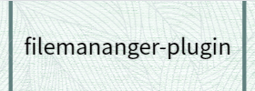

filemanager-plugin
Modules
color/mixer
Members
lastColor
name
Methods
blend
blend
darken
toRgb
my/jacket
Methods
zip
my/shirt
Members
color
Methods
button
unbutton
Classes
Dot
Methods
getWidth
getX
getY
my/jacket
Methods
zip
Turtleneck
Members
size
Point
Methods
fromString
getX
getY
Global
copy
del
move
unzip
zip
my/shirt
.
Turtleneck
()
new
Turtleneck
()
jsdoc/amd.js
,
line 11
Members
size
jsdoc/amd.js
,
line 13
The class'
size
property.